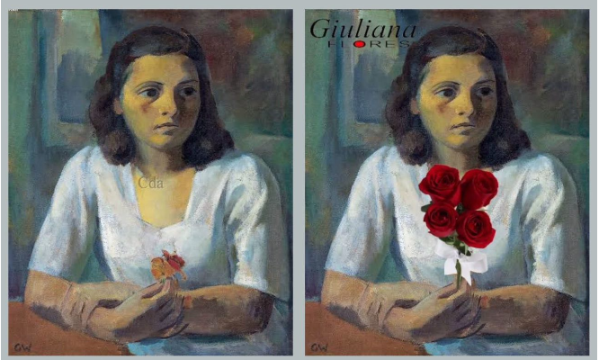

Linguagens
Habilidades
EMT3LGG101: Formular propostas, intervir e tomar decisões que levem em conta o bem comum e os Direitos Humanos. a consciência socioambiental e o consumo responsável em âmbito local, regional e global.
EMT3LGG102: Participar de processos de produção individual e colaborativa em diferentes linguagens, levando em conta suas formas e seus funcionamentos, para produzir sentidos em diferentes contextos.
EM3LGG103: Debater questões polêmicas de relevância social. analisando diferentes argumentos e opiniões, para formular, negociar e sustentar posições, frente a análise de perspectivas distintas.
EMT3LGG104: Criar possibilidades de atuação social, política, artística e cultural por meio de práticas de linguagem. discutindo princípios e objetivos dessa atuação de maneira critica, criativa, solidaria e ética.
EMT31 GG105: Posicionar-se criticamente diante de diversas visões de mundo presentes nos discursos em diferentes linguagens, levando em conta seus contextos de produção e de circulação.
EMT3LGG106: Criar obras autorais, em diferentes gêneros e mídias - mediante seleção e apropriação de recursos textuais e expressivos do repertorio artístico -, e/ou produções derivadas, como forma de dialogar crítica e/ou subjetivamente com o texto literário.
EMT3LGG201: Apropriar-se criticamente de processos de pesquisa e busca de informação, por meio de ferramentas e dos novos formatos de produção e distribuição do conhecimento na cultura de rede.
EM3LGG202: Explorar tecnologias digitais da informação e comunicação (DIC). considerando seus princípios e funcionalidades, e utiliza-as de modo ético, criativo, responsável e adequado a práticas de linguagem em diferentes contextos.
EM3LGG203: Analisar formas contemporâneas de publicidade em contexto digital e peças de campanhas publicitárias e políticas, destacando estratégias de engajamento. viralização, mecanismos de persuasão e efeitos de sentido das múltiplas linguagens, de forma a particionar de debates do campo de atuação da vida pública e tomar decisões conscientes e fundamentadas.
Competências
Utilizar diferentes linguagens (artísticas, corporais e verbais) para exercer, com autonomia e colaboração, protagonismo e autoria na vida pessoal e coletiva, de forma crítica, criativa, ética e solidária, defendendo pontos de vista que respeitem o outro e promovam os Direitos Humanos, a consciência socioambiental e consumo responsável, em âmbito local, regional e global.
Movimentos Artísticos
Impressionismo, Expressionismo, Fauvismo, Cubismo, Abstracionismo, Futurismo, Dadaísmo, Surrealismo, Op Art e Pop Art.
Movimentos Literários
Trovadorismo, humanismo, Quinhetismo, Barroco, Arcadismo, Romantismo, Realismo, Naturalismo, Parnasianismo, Simbolismo e Pré-Modernismo.
Concordância verbal e nominal
A concordância verbal garante que os verbos concordem com os sujeitos, enquanto a concordância nominal garante que os substantivos concordem com adjetivos, artigos, numerais e pronomes.
Earth Day
O Dia da Terra, cuja finalidade é criar uma consciência comum aos problemas da contaminação, conservação da biodiversidade e outras preocupações ambientais para proteger a Terra, foi criado pelo senador norte-americano Gaylord Nelson, no dia 22 de Abril de 1970.
Performance, Happening e Flash Mob
A performance seria quando o artista apresenta uma cena em que normalmente utiliza seu corpo como suporte enquanto os espectadores observam; já no happening o público costuma participar também da ação. Flash Mobs são aglomerações instantâneas de pessoas em um local público para realizar determinada ação inusitada previamente combinada, estas se dispersando tão rapidamente quanto se reuniram.
Arte na publicidade
Na propaganda, a Arte aparece com grande freqüência. Muitas peças publicitárias gráficas são baseadas em artes plásticas, música, cinema ou literatura (a propaganda cita a arte tanto quanto a recria e imita, além de muitas vezes usar a mesma linguagem).
Textos publicitários
Os textos publicitários são aqueles que têm o objetivo de anunciar alguma coisa, fazer com que uma informação se torne pública, desde uma campanha de vacinação até os anúncios de produtos e/ou prestação de serviços.

Uma das campanhas publicitárias que estudamos